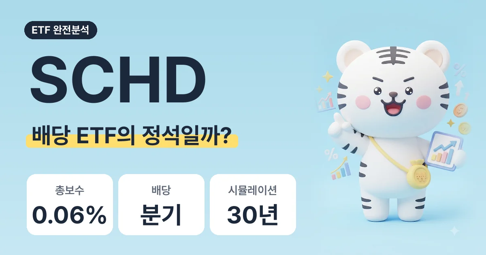
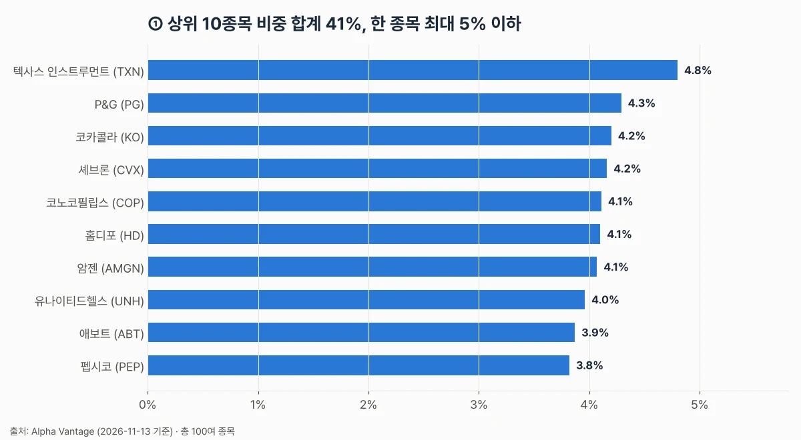
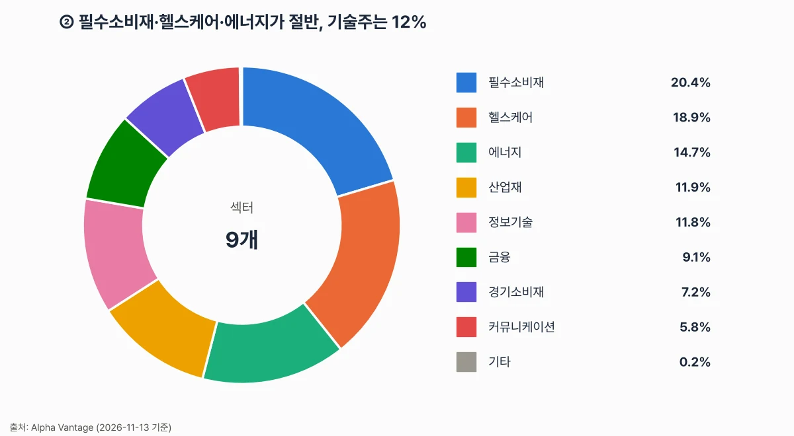
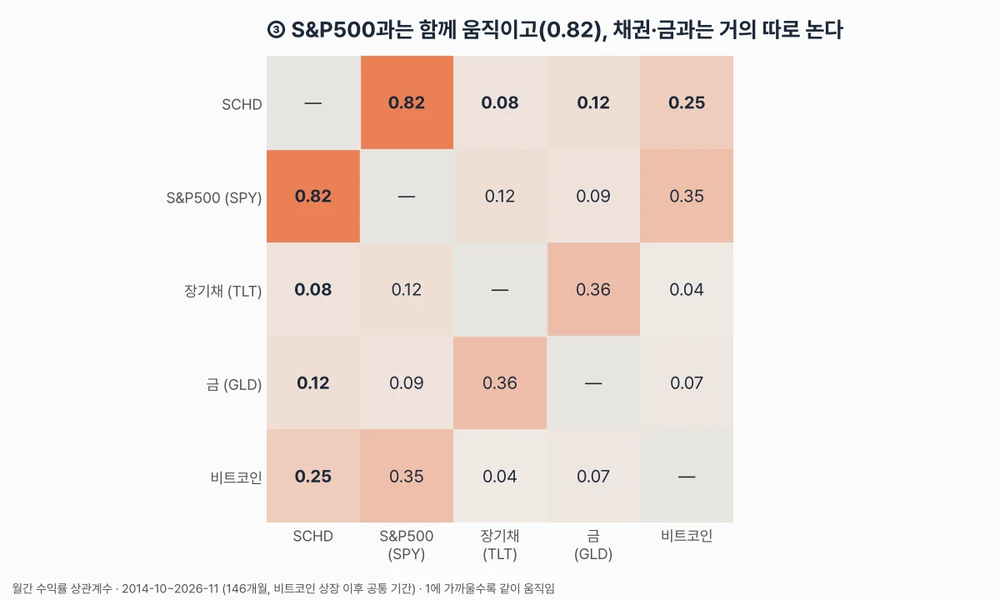
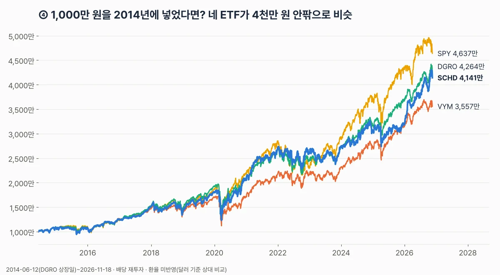
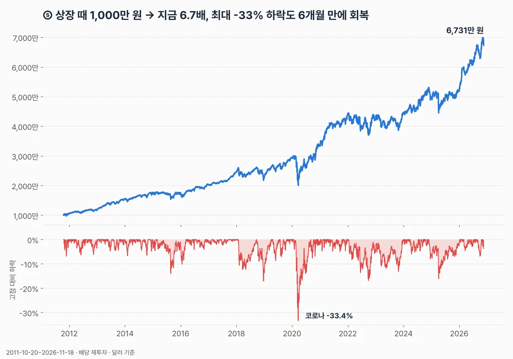
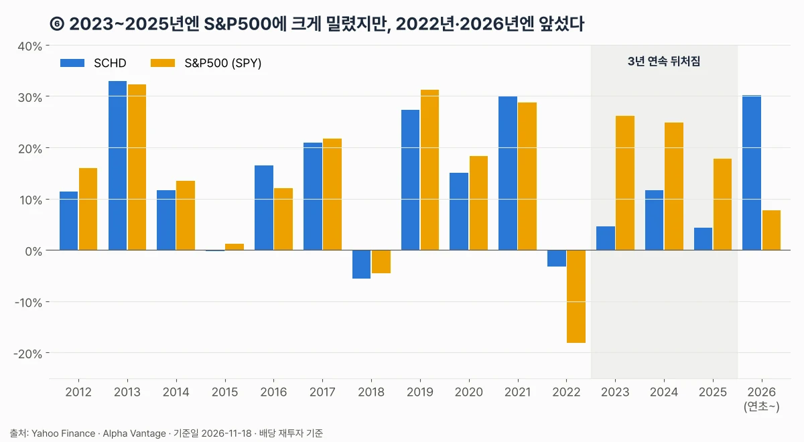
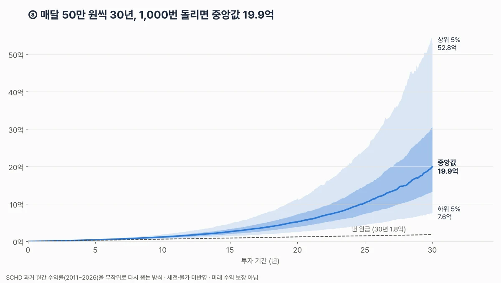
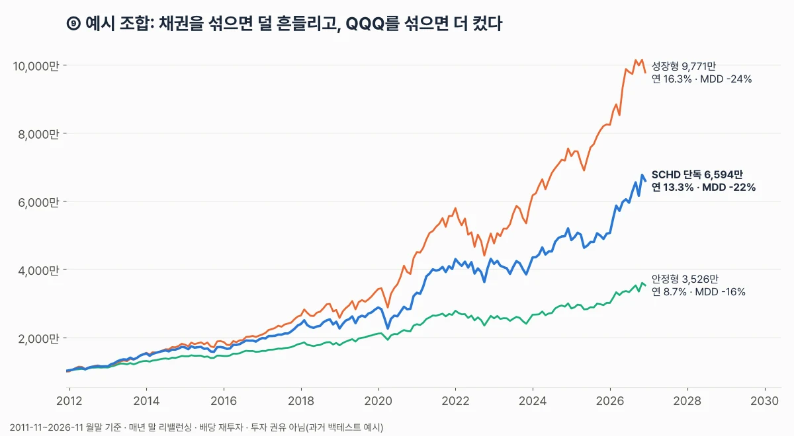

백호 ETF 리포트
백호 ETF 리포트SCHD 배당·수익률 완전분석: 30년 시뮬레이션과 VYM·DGRO 비교

이 글은 공개 데이터를 직접 계산한 정보 글이며, 특정 상품의 매수·매도를 권하지 않습니다.
SCHD는 "배당 ETF 하나만 고르라면"이라는 질문에 가장 자주 나오는 이름입니다. 저도 아직 SCHD를 사지 않았고, 사기 전에 직접 데이터를 뽑아 확인해 보려고 이 글을 썼어요. 그래서 남의 요약 대신 15년 치 주가와 배당을 그대로 계산해 봤습니다.
1. 기본 정보SCHD는 어떤 ETF인가
정식 이름은 Schwab U.S. Dividend Equity ETF입니다. 미국 찰스 슈왑의 자산운용사가 2011년 10월 20일에 상장했고, 다우존스 미국 배당 100 지수를 따라갑니다. 10년 이상 배당을 줬고 재무가 탄탄한 미국 기업 100곳을 골라 담는 구조예요.
| 운용사 | Schwab Asset Management |
| 상장일 | 2011년 10월 20일 |
| 추종 지수 | Dow Jones U.S. Dividend 100 |
| 총보수 | 연 0.06% |
| 순자산 | 약 1,211억 달러 |
| 배당 주기 | 분기 (3·6·9·12월) |
| 보유 종목 수 | 약 100개 (연 1회 교체) |
| 참고 | 2024년 10월 3:1 주식 분할 |
총보수 0.06%는 1,000만 원을 넣었을 때 1년 비용이 6천 원이라는 뜻입니다. 오래 들고 갈수록 이 차이가 커져요.
2. 구성 종목상위 10종목은 41%, 한 종목 쏠림이 없다

가장 큰 종목도 5%를 넘지 않습니다. 텍사스 인스트루먼트, P&G, 코카콜라, 셰브론처럼 이름만 들어도 아는 배당 기업들이 고르게 들어 있어요.

섹터를 보면 성격이 더 분명해집니다. 필수소비재·헬스케어·에너지가 절반 이상이고, 정보기술은 12% 정도예요. 경기가 나빠도 사람들이 계속 쓰는 물건과 서비스를 파는 기업이 중심이라는 뜻입니다. 반대로 AI·빅테크가 시장을 끌어올릴 때는 덜 오를 수밖에 없는 구조이기도 해요.
3. 상관계수S&P500과는 함께, 채권·금과는 따로 움직인다

상관계수는 두 자산이 얼마나 같은 방향으로 움직이는지를 -1에서 1 사이로 나타낸 값입니다. 1에 가까우면 같이 오르고 같이 내려요.
- S&P500 0.82: 결국 미국 주식이라 큰 흐름은 같이 탑니다.
- 장기채 0.08, 금 0.12: 거의 따로 움직여요. 섞으면 포트폴리오의 흔들림이 줄어듭니다.
- 비트코인 0.25: 약하게만 연결돼 있습니다.
SCHD만으로는 하락장을 피할 수 없다는 점도 알 수 있어요. 시장 전체가 빠지면 SCHD도 같이 빠집니다. 분산 효과를 원하면 채권이나 금을 섞어야 해요.
4. 유사 ETFVYM·DGRO와 비교하면?

DGRO가 상장한 2014년 6월부터 똑같이 1,000만 원을 넣었다고 가정했습니다. 네 ETF 모두 4천만 원 안팎으로 결과가 생각보다 비슷해요. 차이는 배당률과 흔들림에서 납니다.
| 2014.6~2026.11 | 연평균 | 최대 낙폭 | 배당률 | 총보수 |
|---|---|---|---|---|
| SCHD | 12.1% | -33.4% | 3.0% | 0.06% |
| VYM (뱅가드 고배당) | 10.7% | -35.2% | 2.3% | 0.06% |
| DGRO (배당 성장) | 12.4% | -35.1% | 1.9% | 0.08% |
| SPY (S&P500) | 13.1% | -33.7% | - | - |
SCHD는 셋 중 배당률이 가장 높으면서 수익률도 뒤지지 않는 쪽입니다. 배당보다 성장을 더 원하면 DGRO, 더 많은 종목에 넓게 나누고 싶으면 VYM이 대안이에요.
- TIGER 미국배당다우존스, SOL 미국배당다우존스, ACE 미국배당다우존스는 SCHD와 같은 지수를 따라갑니다.
- 연금저축·ISA 계좌에서 살 수 있고, 매달 분배금을 주는 상품이 많아요. 분기 배당이 아쉬운 분께 대안이 됩니다.
- 상장한 지 몇 년 안 돼서 이 글의 장기 그래프에는 넣지 않았어요. 총보수는 각 운용사 홈페이지에서 확인해 주세요.
[내부 링크: TIGER 미국배당다우존스 분석 글]
5. 역대 성과15년 동안 6.7배, 최악의 하락은 -33%

| 연평균 수익률 (달러, 배당 재투자) | 13.5% |
| 연평균 수익률 (원화 환산) | 14.7% |
| 배당세 15% 차감 시 (대략) | 약 13.0% |
| 연 변동성 | 13.8% |
| 최대 낙폭 | -33.4% (2020.1~2020.3) |
| 회복까지 걸린 기간 | 약 6개월 (2020.9 회복) |
원화 기준 수익률이 더 높은 건 같은 기간 달러 환율이 올랐기 때문입니다. 반대로 환율이 내리면 원화 수익률이 깎일 수 있어요.

솔직히 제가 가장 아쉬웠던 부분이 여기예요. 2023~2025년 3년 연속 S&P500에 크게 밀렸습니다. 2023년에는 S&P500이 26% 오를 때 SCHD는 4.5%에 그쳤어요. 기술주 비중이 낮아서 AI 랠리를 거의 못 탔기 때문입니다. 대신 금리 충격이 컸던 2022년에는 S&P500이 -18%일 때 -3%로 버텼고, 2026년 들어서는 반대로 크게 앞서고 있어요. 시장 분위기에 따라 성적표가 뒤집히는 ETF라는 걸 기억해 두면 좋습니다.

그래도 제가 SCHD에 계속 관심이 가는 이유는 이 그래프 때문입니다. 주당 배당금이 13년 동안 한 번도 줄지 않고 3.9배가 됐어요. 연 11%씩 늘어난 셈이라, 오래 들고 있을수록 처음 산 가격 대비 배당률이 계속 올라갑니다.
6. 몬테카를로매달 50만 원씩 30년이면 얼마가 될까
몬테카를로 시뮬레이션은 미래를 한 줄로 예측하지 않고, 일어날 수 있는 경우를 1,000번 만들어 보는 방법입니다. SCHD의 과거 월간 수익률 180여 개를 무작위로 다시 뽑아 30년(360개월) 경로를 1,000개 만들었어요.

| 30년 뒤 평가액 | 월 50만 원 적립 | 1,000만 원 거치 |
|---|---|---|
| 낸 원금 | 1.8억 | 0.1억 |
| 최악 (1,000번 중 최저) | 3.6억 | 0.4억 |
| 하위 5% | 7.6억 | 1.2억 |
| 중앙값 | 19.9억 | 4.1억 |
| 평균 | 24.1억 | 5.5억 |
| 상위 5% | 52.8억 | 14.2억 |
| 최고 (1,000번 중 최고) | 107.7억 | 38.7억 |
| 예상 최대 낙폭 (중앙값 / 나쁜 5%) | -25.5% / -39.1% | |
평균이 중앙값보다 높은 건 크게 성공한 몇몇 경우가 평균을 끌어올리기 때문이에요. 현실 감각에는 중앙값이 더 가깝습니다. 그리고 30년 동안 적어도 한 번은 고점에서 25~40% 빠지는 구간을 겪는다고 보는 게 맞아요.
- 지난 15년은 미국 주식이 특히 좋았던 기간입니다. 그 수익률을 30년에 그대로 반복한 결과예요.
- 세금, 물가, 환율은 빠져 있습니다.
- 보수적으로 연 8%만 가정하면 같은 적립식의 30년 결과는 약 7.5억이에요.
7. 예시 조합SCHD에 무엇을 섞으면 어떻게 달라졌나
SCHD 하나만 들고 가는 것보다, 다른 자산과 섞었을 때 어떻게 달라졌는지 과거 데이터로 돌려 봤습니다. 매년 말 원래 비중으로 다시 맞추는(리밸런싱) 방식이에요.

| 2011.11~2026.11 | 연평균 | 변동성 | 최대 낙폭* | 1,000만 원 → |
|---|---|---|---|---|
| 안정형 (SCHD 60 + 중기채 IEF 40) | 8.7% | 8.8% | -15.7% | 3,526만 |
| SCHD 단독 | 13.3% | 13.8% | -21.5% | 6,594만 |
| 성장형 (SCHD 50 + 나스닥100 QQQ 50) | 16.3% | 14.0% | -24.1% | 9,771만 |
* 월말 가격 기준이라 일별 기준(-33.4%)보다 작게 나옵니다.
제가 가장 관심 있게 본 건 성장형 조합이에요. SCHD가 약했던 2023~2025년을 QQQ가 메워 줬고, 변동성은 SCHD 단독과 거의 같았습니다. 성장주를 이미 갖고 있는 분이라면, 반대로 SCHD를 섞어서 배당과 안정감을 더하는 용도로 쓰기 좋아요. 다만 QQQ가 유난히 좋았던 기간이라 앞으로도 같은 결과가 나온다는 보장은 없습니다.
정리SCHD, 이런 분께 맞아요
- 잘 맞는 분: 배당이 해마다 늘어나는 걸 보며 오래 모을 분, 성장주 위주 계좌에 안정감을 더하고 싶은 분
- 아쉬울 수 있는 분: 기술주 랠리를 다 따라가고 싶은 분, 매달 현금흐름이 필요한 분(국내 상장 월분배 상품 참고)
- 기억할 숫자: 총보수 0.06%, 배당 13년 연속 증가, 최대 낙폭 -33%
저는 이번에 데이터를 뽑아 보고 "SCHD 하나로 끝"보다는 성장주 옆에 두는 분산용이 더 맞다는 생각이 들었어요. 다음 글에서는 국내 상장 쌍둥이 ETF를 같은 방식으로 비교해 보겠습니다.
[내부 링크: 배당 ETF 카테고리] · [내부 링크: QQQ 분석 글]
면책: 이 글은 정보 제공 목적이며 투자 권유가 아닙니다. 과거 수익률과 시뮬레이션 결과는 미래 수익을 보장하지 않습니다. 투자 판단과 책임은 본인에게 있습니다.